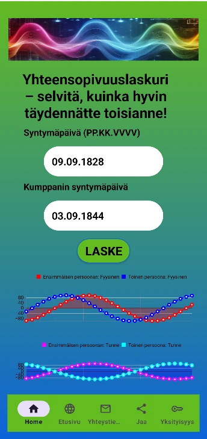
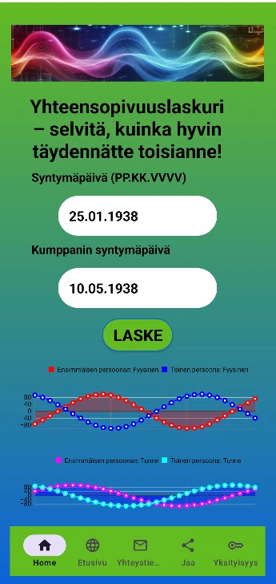
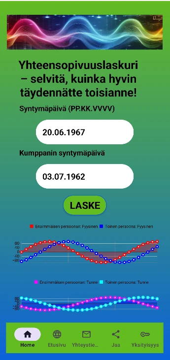
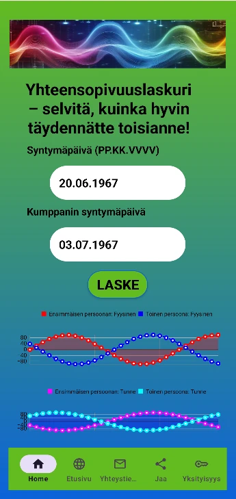
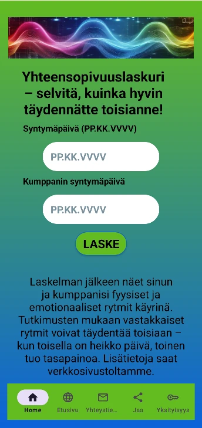

Ihmissuhteet ovat energiaa. Ymmärrys on avain. Oletko valmis löytämään syvemmän harmonian tason kumppanisi, ystäväsi tai liikekumppanisi kanssa?
Neuvostotutkijoiden hypoteesi: Jo viime vuosisadan lopulla tutkijat totesivat: pitkän ja onnellisen avioliiton avain piilee biorytmien peilikuvassa. Aivan kuten fysiikassa vastakkaiset varaukset vetävät toisiaan puoleensa, rytmien tulisi olla vastakkaisvaiheessa.
Jos ne "päällekkäistyvät", se voi aiheuttaa torjuntaa ja konflikteja (kuten esimerkiksi Leo ja Sofja Tolstoin avioliitossa, katso kuva alta). Keskitymme kahteen tärkeimpään rytmiin.
Yhteensopivuustyökalumme tarjoaa välittömän näkymän sinun ja kumppanisi rytmiseen synkronointiin analysoimalla fyysisten ja emotionaalisten syklien dynamiikkaa. Etsimme peilikuvayhteensopivuutta – ihanteellista tilaa, jossa toinen täydentää luonnollisesti toisen heikkoutta.
Harmonia ei ole sattumaa, se on laskettavissa. Käytä tätä tietoa vahvempien ja kestävämpien siteiden rakentamiseen.

❌ Energeettinen dissonanssi
Klassinen esimerkki, jossa rytmit "päällekkäistyivät". Samat vaiheet aiheuttivat jatkuvaa jännitettä, kyvyttömyyttä täydentää toisiaan ja emotionaalista loppuunpalamista pitkässä avioliitossa.

✅ Peilikuvaharmonia
Rytmit olivat ihanteellisessa vastakkaisvaiheessa. Tämä loi ainutlaatuisen yhteyden, jossa toinen kumppani tarjosi vakautta hetkellä, jolloin toinen oli emotionaalisessa laskussa.

❌ Rytmien päällekkäisyys
Vaikka pari oli loistava, heidän biorytminsä osuivat liian lähekkäin. Tämä tarkoittaa, että molemmat kokivat laskut samanaikaisesti, eivätkä kyenneet tukemaan toisiaan vaikeina hetkinä.

✅ Emotionaalinen kompensointi
Päinvastoin kuin aiemmassa kokemuksessa, tässä rytmit muodostavat "peilikuvan". Se takaa luonnollisen rauhan ja harmonian, joka näkyy heidän pitkäaikaisessa suhteessaan.
Ota yhteyttä: manibioritmi@gmail.com
